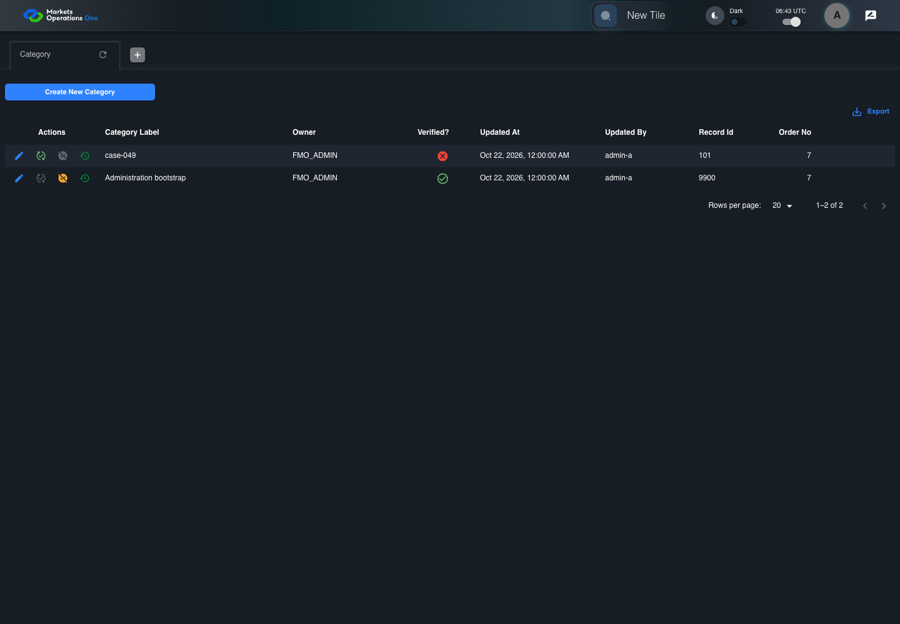
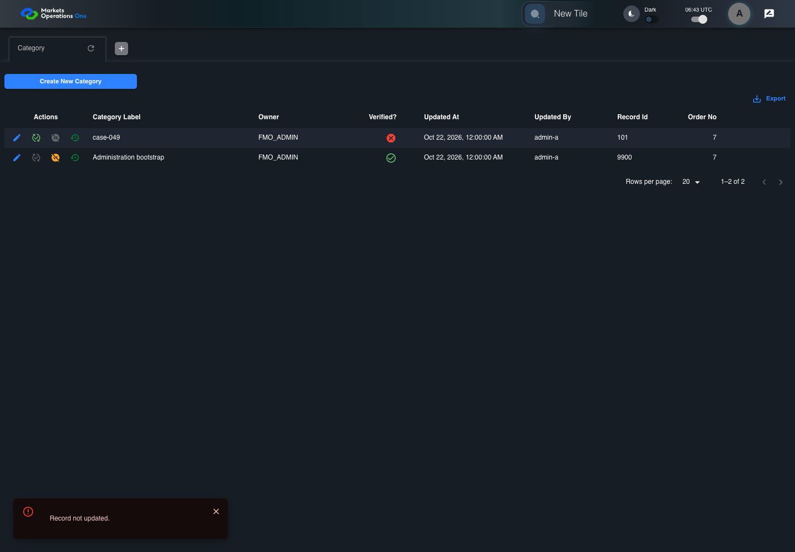
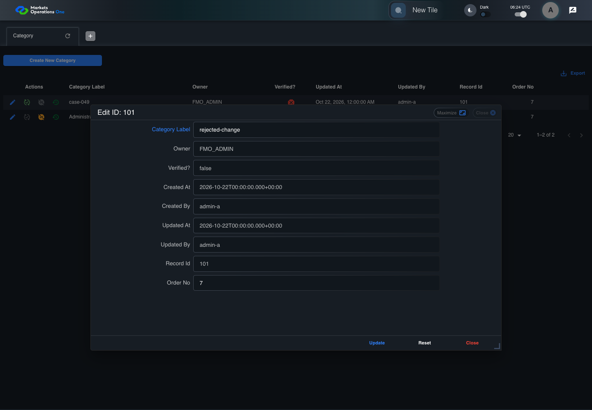

All canonical cases
BFF-ADM-049: Handle Category update database failure Business acceptance remains unverified. Owner: unknown. Review the canonical definition and fixture limits before acceptance.
Latest local result: PASS Business acceptance: NOT_ESTABLISHED.
The latest local result describes execution. The historical definition review assesses the case design before execution.
Latest step screenshot evidence: COMPLETE . 11/11 canonical steps have execution screenshots.
Canonical Gherkin definition . Definition version: 2. SHA-256: 6094f69da72c273bb6e88093625174fd23c4238eebcd0f187b8f3cf21d86080a.
Historical definition review (preflight): UNVERIFIED A definition review FAIL can coexist with local PASS. The definition failed preflight quality checks.
This historical review does not change the latest execution result. Resolve definition gaps before business acceptance.
Canonical Gherkin steps Feature: Admin persistence
@BFF-ADM-049
Scenario: Handle Category update database failure
Given Admin A uses subject "admin-a" with role "FMO_ADMIN" in an isolated authenticated browser
And the controlled Category fixture records the initial grid rows and persisted values
And the Category grid has record "101" owned by "FMO_ADMIN"
And the baseline fixture data defines "Category Label" as "case-049"
And the next BFF repository save throws a controlled database exception
When Admin A clicks the button labeled "Edit" in the Category grid row with "Record Id" "101"
Then the dialog titled "edit ID: 101" is visible on the Category administration page
When Admin A fills the textbox labeled "Category Label" with "rejected-change" in dialog "edit ID: 101"
And Admin A clicks the button labeled "Update" in dialog "edit ID: 101"
Then the alert with severity "error" in the portal snackbar contains the exact text "Record not updated."
And the Category data grid with column "Record Id" row identifiers and loaded field values equal the initial grid snapshot on the Category administration page Acceptance and evidence limits: NO_COMPLETE_REAL_APPLICATION_BINDING, CANONICAL_REVIEW_OR_EVIDENCE_UNRESOLVED.
Planned essential canonical frames: 3. Plan completeness requires separate review.
Latest attempt BFF-ADM-049 current BFF administration through actual UI PASS · application/run-072/bff-adm-049-current-bff-administration-through-actual-ui-45d4d14b5ad6-attempt-1 · ACTUAL_APPLICATION_LOCAL_SERVICES
Actual current React and exact-current BFF admin controllers/services/JPA with actual migration DDL in disposable PostgreSQL. Controlled OUD/EMS2 identities and local Spring bootstrap. Fixture SQL seeds/mutates isolated records; service errors are actual database errors. Undefined agreed messages remain unresolved acceptance.
2026-10-22T06:43:57.617Z to 2026-10-22T06:44:01.956Z
Assertions and result · Artifact manifest · Exact run inputs and source hashes
Result SHA-256: 9c158e4d51ede394905f5b7be53087a8d5518c851a8b5b8df8a7384c81c14104 Playwright trace
Machine observations Screenshot capture: CAPTURED. Named frames: 12.
Step screenshot evidence: COMPLETE. 11/11 canonical steps have execution screenshots.
Canonical step timeline Given Admin A uses subject "admin-a" with role "FMO_ADMIN" in an isolated authenticated browser

1. step-01 Visible state after step 1: Given Admin A uses subject "admin-a" with role "FMO_ADMIN" in an isolated authenticated browser
2026-10-22T06:43:59.781Z · 1440×100069ebc530d98272603849a676c52b419f297da5a40472f7e66b8f998215f8317d And the controlled Category fixture records the initial grid rows and persisted values
2. step-02 Visible state after step 2: And the controlled Category fixture records the initial grid rows and persisted values
2026-10-22T06:43:59.933Z · 1440×100069ebc530d98272603849a676c52b419f297da5a40472f7e66b8f998215f8317d And the Category grid has record "101" owned by "FMO_ADMIN"
3. step-03 Visible state after step 3: And the Category grid has record "101" owned by "FMO_ADMIN"
2026-10-22T06:44:00.011Z · 1440×100069ebc530d98272603849a676c52b419f297da5a40472f7e66b8f998215f8317d And the baseline fixture data defines "Category Label" as "case-049"
4. step-04 Visible state after step 4: And the baseline fixture data defines "Category Label" as "case-049"
2026-10-22T06:44:00.076Z · 1440×100069ebc530d98272603849a676c52b419f297da5a40472f7e66b8f998215f8317d And the next BFF repository save throws a controlled database exception
5. step-05 Visible state after step 5: And the next BFF repository save throws a controlled database exception
2026-10-22T06:44:00.127Z · 1440×100069ebc530d98272603849a676c52b419f297da5a40472f7e66b8f998215f8317d When Admin A clicks the button labeled "Edit" in the Category grid row with "Record Id" "101"
6. step-06 Visible state after step 6: When Admin A clicks the button labeled "Edit" in the Category grid row with "Record Id" "101"
2026-10-22T06:44:00.406Z · 1440×10008d4ac1fcc0340d10b148e2587403ecfa6fb7ce45a1956b3a470490d8638195a2 Then the dialog titled "edit ID: 101" is visible on the Category administration page
7. step-07 Visible state after step 7: Then the dialog titled "edit ID: 101" is visible on the Category administration page
2026-10-22T06:44:00.488Z · 1440×1000c431d31ca860c575886862c1745ab0217de5334f03ab35072d1a10dfe37eefa3 When Admin A fills the textbox labeled "Category Label" with "rejected-change" in dialog "edit ID: 101"
8. step-08 Visible state after step 8: When Admin A fills the textbox labeled "Category Label" with "rejected-change" in dialog "edit ID: 101"
2026-10-22T06:44:00.921Z · 1440×100041e787995d1bb1444f593a88ec3f0fcfff31eab11e78385422904641f9ae8c2e And Admin A clicks the button labeled "Update" in dialog "edit ID: 101"

9. step-09 Visible state after step 9: And Admin A clicks the button labeled "Update" in dialog "edit ID: 101"
2026-10-22T06:44:01.166Z · 1440×1000c850ea1d93ea396bbb4a3d93b59cbbc43bc97f20539ea37e6e23faf2e2956c32 Then the alert with severity "error" in the portal snackbar contains the exact text "Record not updated."
10. step-10 Visible state after step 10: Then the alert with severity "error" in the portal snackbar contains the exact text "Record not updated."
2026-10-22T06:44:01.236Z · 1440×1000c850ea1d93ea396bbb4a3d93b59cbbc43bc97f20539ea37e6e23faf2e2956c32 And the Category data grid with column "Record Id" row identifiers and loaded field values equal the initial grid snapshot on the Category administration page
11. step-11 Visible state after step 11: And the Category data grid with column "Record Id" row identifiers and loaded field values equal the initial grid snapshot on the Category administration page
2026-10-22T06:44:01.367Z · 1440×1000c850ea1d93ea396bbb4a3d93b59cbbc43bc97f20539ea37e6e23faf2e2956c32 Additional named frames 12. final-result The final visible state after the named test assertions.
2026-10-22T06:44:01.504Z · 1440×1000c850ea1d93ea396bbb4a3d93b59cbbc43bc97f20539ea37e6e23faf2e2956c32 Screenshots establish visible state only. Assertions and traces support functional claims.
Earlier attempt history (2) Earlier attempt PASS (superseded by latest PASS) BFF-ADM-049 current BFF administration through actual UI PASS · application/run-066/bff-adm-049-current-bff-administration-through-actual-ui-45d4d14b5ad6-attempt-1 · ACTUAL_APPLICATION_LOCAL_SERVICES
Actual current React and exact-current BFF admin controllers/services/JPA with actual migration DDL in disposable PostgreSQL. Controlled OUD/EMS2 identities and local Spring bootstrap. Fixture SQL seeds/mutates isolated records; service errors are actual database errors. Undefined agreed messages remain unresolved acceptance.
2026-10-22T06:24:04.989Z to 2026-10-22T06:24:08.105Z
Assertions and result · Artifact manifest · Exact run inputs and source hashes
Result SHA-256: e001f0377b1c4df44adb9d503fd9e477c8560844a44f9d7acd3d9a342496dc33 Playwright trace
Machine observations Screenshot capture: CAPTURED. Named frames: 12.
Step screenshot evidence: COMPLETE. 11/11 canonical steps have execution screenshots.
Canonical step timeline Given Admin A uses subject "admin-a" with role "FMO_ADMIN" in an isolated authenticated browser
1. step-01 Visible state after step 1: Given Admin A uses subject "admin-a" with role "FMO_ADMIN" in an isolated authenticated browser
2026-10-22T06:24:06.648Z · 1440×10007c39347dcc2ee3d9fa21e1aec390ffeafb3053a449c389176be5eb28ab1ac7ea And the controlled Category fixture records the initial grid rows and persisted values
2. step-02 Visible state after step 2: And the controlled Category fixture records the initial grid rows and persisted values
2026-10-22T06:24:06.747Z · 1440×10007c39347dcc2ee3d9fa21e1aec390ffeafb3053a449c389176be5eb28ab1ac7ea And the Category grid has record "101" owned by "FMO_ADMIN"
3. step-03 Visible state after step 3: And the Category grid has record "101" owned by "FMO_ADMIN"
2026-10-22T06:24:06.781Z · 1440×1000f0a02b0ec988d9e7e0c8a983ceff5d55aa61744b5d50d2021f46f194d7f133ac And the baseline fixture data defines "Category Label" as "case-049"
4. step-04 Visible state after step 4: And the baseline fixture data defines "Category Label" as "case-049"
2026-10-22T06:24:06.813Z · 1440×10007c39347dcc2ee3d9fa21e1aec390ffeafb3053a449c389176be5eb28ab1ac7ea And the next BFF repository save throws a controlled database exception
5. step-05 Visible state after step 5: And the next BFF repository save throws a controlled database exception
2026-10-22T06:24:06.846Z · 1440×1000f0a02b0ec988d9e7e0c8a983ceff5d55aa61744b5d50d2021f46f194d7f133ac When Admin A clicks the button labeled "Edit" in the Category grid row with "Record Id" "101"
6. step-06 Visible state after step 6: When Admin A clicks the button labeled "Edit" in the Category grid row with "Record Id" "101"
2026-10-22T06:24:07.037Z · 1440×1000321de9dc8d103cd5643e41a150e055a6802e2f7bd0d11a38f5a09cd84301c8f7 Then the dialog titled "edit ID: 101" is visible on the Category administration page
7. step-07 Visible state after step 7: Then the dialog titled "edit ID: 101" is visible on the Category administration page
2026-10-22T06:24:07.084Z · 1440×1000e7011fccee28f16c1ee4fd3470ddd597fbc805b3e378315a04ae82ba06392b8f When Admin A fills the textbox labeled "Category Label" with "rejected-change" in dialog "edit ID: 101"

8. step-08 Visible state after step 8: When Admin A fills the textbox labeled "Category Label" with "rejected-change" in dialog "edit ID: 101"
2026-10-22T06:24:07.492Z · 1440×1000960d9852410db3a0d16e6be38f4512a1e4524bdffbc716e677251f638c809795 And Admin A clicks the button labeled "Update" in dialog "edit ID: 101"
9. step-09 Visible state after step 9: And Admin A clicks the button labeled "Update" in dialog "edit ID: 101"
2026-10-22T06:24:07.698Z · 1440×100094207040ae65441535777d5f63ff5f12e814eeb4ddd95f99807261d399a8d291 Then the alert with severity "error" in the portal snackbar contains the exact text "Record not updated."
10. step-10 Visible state after step 10: Then the alert with severity "error" in the portal snackbar contains the exact text "Record not updated."
2026-10-22T06:24:07.730Z · 1440×100076585213272bf0f00eb0404224291944827392a9f28701be67c66b2869f66ab0 And the Category data grid with column "Record Id" row identifiers and loaded field values equal the initial grid snapshot on the Category administration page
11. step-11 Visible state after step 11: And the Category data grid with column "Record Id" row identifiers and loaded field values equal the initial grid snapshot on the Category administration page
2026-10-22T06:24:07.834Z · 1440×100076585213272bf0f00eb0404224291944827392a9f28701be67c66b2869f66ab0 Additional named frames 12. final-result The final visible state after the named test assertions.
2026-10-22T06:24:07.897Z · 1440×100076585213272bf0f00eb0404224291944827392a9f28701be67c66b2869f66ab0 Screenshots establish visible state only. Assertions and traces support functional claims.
Earlier attempt PASS (superseded by latest PASS) BFF-ADM-049 current BFF administration through actual UI PASS · application/run-062/bff-adm-049-current-bff-administration-through-actual-ui-45d4d14b5ad6-attempt-1 · ACTUAL_APPLICATION_LOCAL_SERVICES
Actual current React and exact-current BFF admin controllers/services/JPA with actual migration DDL in disposable PostgreSQL. Controlled OUD/EMS2 identities and local Spring bootstrap. Fixture SQL seeds/mutates isolated records; service errors are actual database errors. Undefined agreed messages remain unresolved acceptance.
2026-10-22T06:01:29.635Z to 2026-10-22T06:01:35.273Z
Assertions and result · Artifact manifest · Exact run inputs and source hashes
Result SHA-256: de92b7412600900457a26e546803ed13e72d4e90d640da63b689f28baf973324 Playwright trace
Machine observations Screenshot capture: CAPTURED. Named frames: 12.
Step screenshot evidence: COMPLETE. 11/11 canonical steps have execution screenshots.
Canonical step timeline Given Admin A uses subject "admin-a" with role "FMO_ADMIN" in an isolated authenticated browser
1. step-01 Visible state after step 1: Given Admin A uses subject "admin-a" with role "FMO_ADMIN" in an isolated authenticated browser
2026-10-22T06:01:33.005Z · 1440×100092135f72844196ed29db850910cece1516dca8fceeae124af58662caed635638 And the controlled Category fixture records the initial grid rows and persisted values
2. step-02 Visible state after step 2: And the controlled Category fixture records the initial grid rows and persisted values
2026-10-22T06:01:33.171Z · 1440×100092135f72844196ed29db850910cece1516dca8fceeae124af58662caed635638 And the Category grid has record "101" owned by "FMO_ADMIN"
3. step-03 Visible state after step 3: And the Category grid has record "101" owned by "FMO_ADMIN"
2026-10-22T06:01:33.249Z · 1440×100092135f72844196ed29db850910cece1516dca8fceeae124af58662caed635638 And the baseline fixture data defines "Category Label" as "case-049"
4. step-04 Visible state after step 4: And the baseline fixture data defines "Category Label" as "case-049"
2026-10-22T06:01:33.302Z · 1440×1000cf9aadf3dc3f84788973b9739061b890ef5249be1828174a037f1c86d43e030a And the next BFF repository save throws a controlled database exception
5. step-05 Visible state after step 5: And the next BFF repository save throws a controlled database exception
2026-10-22T06:01:33.388Z · 1440×1000cf9aadf3dc3f84788973b9739061b890ef5249be1828174a037f1c86d43e030a When Admin A clicks the button labeled "Edit" in the Category grid row with "Record Id" "101"
6. step-06 Visible state after step 6: When Admin A clicks the button labeled "Edit" in the Category grid row with "Record Id" "101"
2026-10-22T06:01:33.696Z · 1440×1000391bb015ebb3261aa3c11184a59ef85f61bcf3c9efca72bfac5437da34bfd1c2 Then the dialog titled "edit ID: 101" is visible on the Category administration page
7. step-07 Visible state after step 7: Then the dialog titled "edit ID: 101" is visible on the Category administration page
2026-10-22T06:01:33.776Z · 1440×10002a39ba8438d8032e11c359ec1d63c6727700a3e0ee4956dbef45944c6c1822c7 When Admin A fills the textbox labeled "Category Label" with "rejected-change" in dialog "edit ID: 101"
8. step-08 Visible state after step 8: When Admin A fills the textbox labeled "Category Label" with "rejected-change" in dialog "edit ID: 101"
2026-10-22T06:01:34.174Z · 1440×1000c0b39ed2ef62bb6e9d5666a56d57d26a27c2d2e830709b32b15b1784cb081df4 And Admin A clicks the button labeled "Update" in dialog "edit ID: 101"
9. step-09 Visible state after step 9: And Admin A clicks the button labeled "Update" in dialog "edit ID: 101"
2026-10-22T06:01:34.441Z · 1440×100084f7b2fe4e3c3f060d7f1aa1ace72089b8c72e3c721918f0b8d4195d27731680 Then the alert with severity "error" in the portal snackbar contains the exact text "Record not updated."
10. step-10 Visible state after step 10: Then the alert with severity "error" in the portal snackbar contains the exact text "Record not updated."
2026-10-22T06:01:34.544Z · 1440×100084f7b2fe4e3c3f060d7f1aa1ace72089b8c72e3c721918f0b8d4195d27731680 And the Category data grid with column "Record Id" row identifiers and loaded field values equal the initial grid snapshot on the Category administration page
11. step-11 Visible state after step 11: And the Category data grid with column "Record Id" row identifiers and loaded field values equal the initial grid snapshot on the Category administration page
2026-10-22T06:01:34.689Z · 1440×100084f7b2fe4e3c3f060d7f1aa1ace72089b8c72e3c721918f0b8d4195d27731680 Additional named frames 12. final-result The final visible state after the named test assertions.
2026-10-22T06:01:34.803Z · 1440×100084f7b2fe4e3c3f060d7f1aa1ace72089b8c72e3c721918f0b8d4195d27731680 Screenshots establish visible state only. Assertions and traces support functional claims.